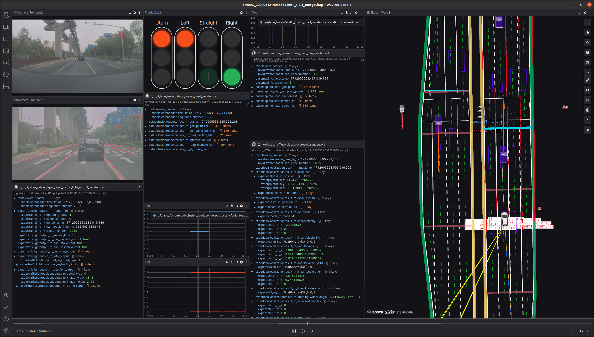
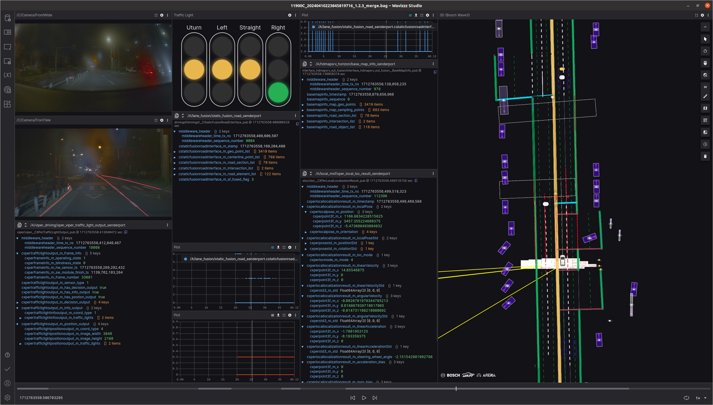
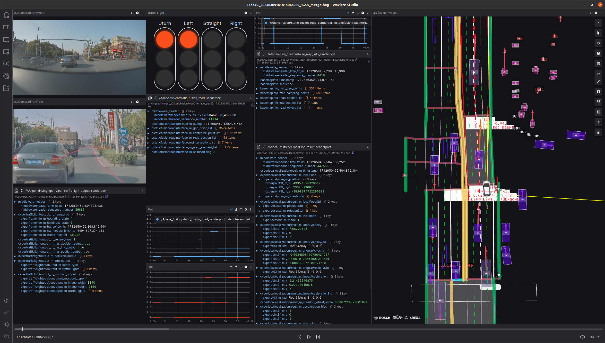
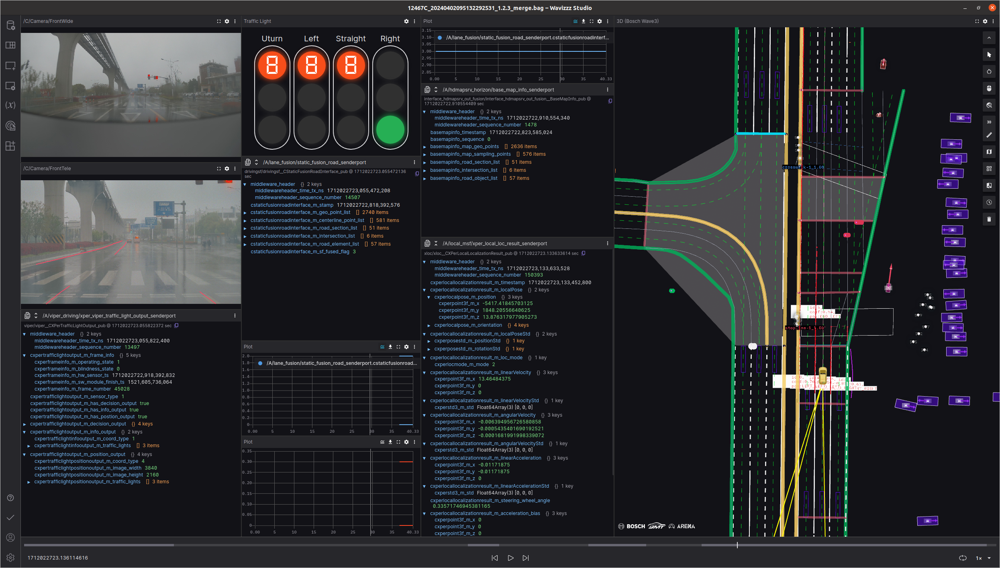
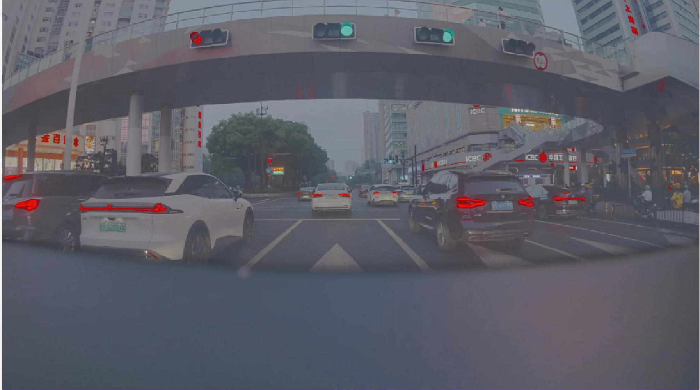
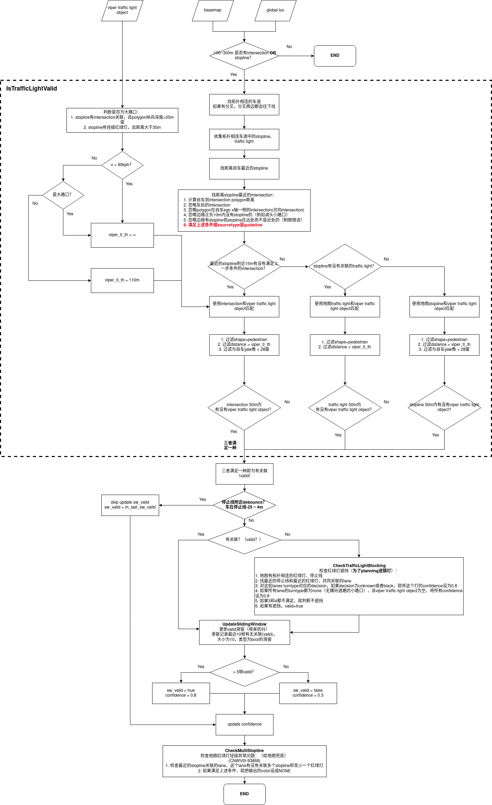

LANEFUSION Urban Red and Green Light Scheme
Viper traffic light input
Input divided into two ways:
Viper Traffic Light Object: Single -frame target detection results, 3D positions under EGO
VIPER Traffic Light Decision: The target detection results pass through the network, and whether the current four directions (straight, left, right, turn around, turn around)
There is no correspondence between DeCision and Traffic Light Object. Decision has no location information
viper traffic light problem
category
Ticket number
Problem Description
Decision jump variant class
Yellow Flash Friends is recognized as red and yellow lights
Yellow Flash Lantern is misdiagnosed as Yellow, Black, YELLOW_BLINK
Green flashing green
Object jumping
Lights object sometimes
Interference by other lights causes identification errors
Two light signs in the upper and lower lamps
Left rotating light is disturbed by straight lights
Planning's approximate solution at the intersection in Urban scene and the use of SF output
Get Global Route from Map Service, find the Related ROAD ELEMENT LIST contained in Global Route
Search in the map element to search whether there is Stopline for the calculation of the parking waiting location
Search in the map element to search whether there is MaptrafficLight, which is used to confirm the lane related information
After satisfying the Map Stopline+Trafflicht information, confirm the VIPER's decision information for viewing the state of the light
Planning's demand for red and green lights in the intersection
Map exists Stopline
MAP exists in trafflicLight
VIPER output DECISION and SF interface transparent
SF's performance on upstream expectations
MAP information is complete, the Internet attribute meets the judgment needs
Viper Decision stable and accurate
1. OTA1, OTA1.5 transparent mode
Mainly update development items
Increase the judgment of the Internet scene
Increase whether there is a MAP Traffic Light judgment in front of 100M
issues that need resolving
For the lack of associated with red and green lights in MAP, Planning ignores VIPER Decision cross the intersection
Design
After judging the intersection in front of the intersection or the red and green lights of the map, the last four of the VIPER Decision at SF Road_Element_list
Because Viper Traffic Light lacks effective and stable position estimates and output, the correlation effect with MAP TL is poor, so the two do not do a special association
2. Filter mode OTA2
-
background
Mainly solve the closer intersection. The red and green lights in the distance allow the self -car to stop the nearby Stopline:
CNWVIII-88173 CNWVIII-85425 CNWVIII-87935
There are multiple traffic light objects:
O:\Engineering\domain\WAVE3\00_DataExchange\000_Problem_Data\01_Driving\DAPAI 2\20240326\20240326214953
O:\Engineering\domain\WAVE3\00_DataExchange\000_Problem_Data\01_Driving\DAPAI 2\20240326\20240326214903
If it is a relatively close Traffic Light, the RoadElement Confidence> 0.5 emitted by SF.otherwise < 0.5
Various intersections
Only Stopline
- 
There are traffic light, stopline, no interest
- 
Only Internet:
Map of the Map of Intersection: Motor vehicles can pass horizontally
- 
Stopline and INTERSEON in front are not together
- 
traffic light corner cases
- 
-
plan
Traffic light blocking check:
In order to deal with the problem of traffic lights
When the map has a related traffic light, but the DeCision detection is unknown, and the current confidence = 0.3:
Set the Decision corresponding to the current lane Turntype to UNKNOWN, and the confidence to 0.8
Multi-stopline check
In order to deal with the map Traffic Light error, multiple stopline problems
When confident = 0.3, and there are multiple stoplines in front of the same section, set the confidence to 0.8, and set the DECISION color to UNKNOWN

OTA2 Red and Green Light Typical Questions
VIPER Traffic Light Object position is not allowed and erroneous correlation caused by misunderstanding CNWVIII-97175 CNWVIII-99370
Viper Decision error: CNWVIII-92736 CNWVIII-90579 CNWVIII-95118 CNWVIII-99581
Complex intersection decision error CNWVIII-98112 - Jira issue doesn't exist or you don't have permission to view it.

Pedestrians' red and green lights are not allowed to be allowed to filter such traffic lights, which eventually leads to errors. CNWVIII-95439
The error association of the red and green lights is similar to the same distance: CNWVIII-95996
The side effects caused by other pockets:
Map Red and Green Light/STOPLINE Hanging error problem: CNWVIII-97088 CNWVIII-100076
CNWVIII-100076 SF pressed Planning to make a map error, but Planning can’t pass the intersection
The problem of red and green light blocking judgment, 0509DEV has been repaired by a version is being re -measured: CNWVIII-96412 CNWVIII-95426 CNWVIII-96949
OTA3 filter mode v2.0
Expand the DEBOUNCE range before and after the stop line, from 4M after the stop line to -25m to 4m
Increase deep filtering of red and green light objects
Optimize the association process and increase TL-TL association